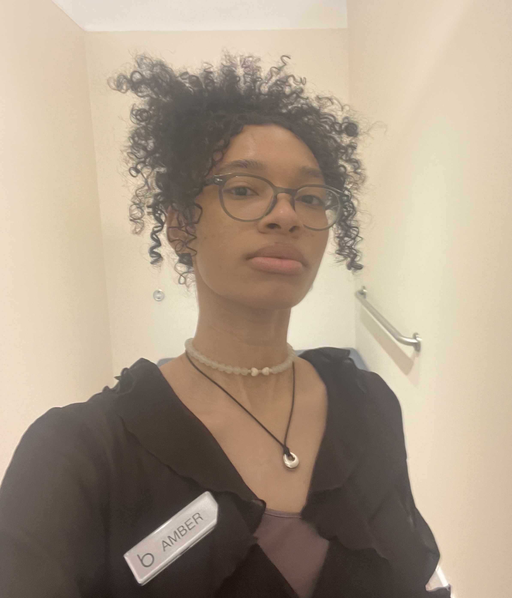

Amber S. Diaz
Stylist. Creative. Curator of Vibes.
NYC-born. Luxury-trained. Built different since Bergdorfs.
Top 4 Friends (Jobs)
 Bergdorf Goodman
Bergdorf Goodman
2015–2017
 Prada
Prada
2017–2019
 R13 Denim
R13 Denim
2019–2022
 Issey Miyake
Issey Miyake
2022–2024
üìå Latest Bulletin: R√©sum√© Snapshot
üõçÔ∏è Issey Miyake ‚Äì Assistant Manager: Built VIP clientele, $426K+ sales
üëñ R13 ‚Äì Denim Specialist: Trained staff, styled campaigns, peak holiday sales
üë† Prada ‚Äì Sales Advisor: RTW, accessories, clientele building
üíÑ Bergdorf Goodman ‚Äì Sales Support: My first runway, my first love
üìö Education: Parsons School of Design (Certificate in Fashion Marketing)
üéØ Skills: POS systems, CRM, Visual Merchandising, Clienteling, Styling
üíñ Interests: Queer fashion history, gardening, digital zines, resin crafts